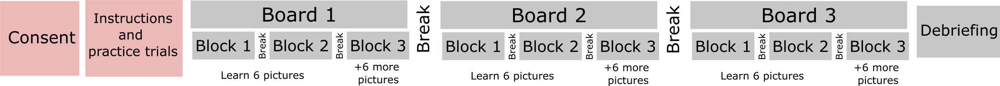

<!doctype html>
<html lang="en">

<head>
	<meta charset="utf-8">
	<meta name="viewport" content="user-scalable=no, width=device-width, initial-scale=1.0">
	<title>Instructions2</title>
	<script src="jspsych-6.3.1/jspsych.js"></script>
	<script src='./jspsych-6.3.1/plugins/jspsych-instructions.js'></script>
	<script src='./jspsych-6.3.1/plugins/jspsych-html-slider-response.js'></script>
	<script src='./jspsych-6.3.1/plugins/jspsych-survey-multi-choice.js'></script>
	<script src='./jspsych-6.3.1/plugins/jspsych-preload.js'></script>
	<script src='./extra_functions/board_creator.js'></script>
	<script src="jatos.js"></script>
	<link rel="stylesheet" href="jspsych-6.3.1/css/jspsych.css" type="text/css">
	</link>
	<link rel="stylesheet" href="./extra_files/schema_online.css" type="text/css">
	</link>
</head>

<body>
	<script>
		
		//start timeline
		jatos.onLoad(function () {
			// debugger
			//make a timeline
			let timeline = [];
	
			// Define pages for phase 1
			let instruction_pages = [
				'<div class= "header">' +
				'<h1> Instructions </h1>' +
				'</div>' +
				'<div class="instruct">' +
				'<p>Great! You are ready to start the experiment!</p>' +
                '<br>' +
                '<p>The full experiment will last ~50 minutes.</p>' +
                '<p><b>You will have to learn location of pictures on 3 different boards distinguished by their background colors.</b></p>' +
				'</div>',

				'<div class= "header">' +
				'<h1> Instructions </h1>' +
				'</div>' +
				'<div class="instruct">' +
				'<p>For each board, you will start with learning locations of 6 pictures. Each picture will be repeated 4 times, with a total of 24 trials.</p>' +
				'<p>These 24 trials will be broken up into 2 blocks of training, with a break in between.</p>' +
				'<p>Then, in an additional 3rd block, you will learn locations of another 6 pictures on that board.</p>' +
				'<p>Below you can see a schematic map of the full experiment.</p>' +
				'</img>' + 
				'<br><p>Click "Next" to see instructions for the 1st board.</p>' +
				'</div>',

			];

			let instructions = {
				type: 'instructions',
				pages: instruction_pages,
				show_clickable_nav: true,
				button_label_next: '<span style="color: black"d;> <strong> Next </stong></span>',
				data: { test_part: 'instructions2' }					
			};

			timeline.push(instructions);


			jsPsych.init({
				timeline: timeline,

				on_finish: function (data) {

					// Make JATOS remember that this block was run
					jatos.studySessionData.latestFinishedComponentId    = jatos.componentId;
					jatos.studySessionData.latestFinishedComponentPos   = jatos.componentPos;
					jatos.studySessionData.latestFinishedComponentTitle = jatos.componentProperties.title;
					// debugger
					// Record results
					let results_var = jsPsych.data.get().values()[0]

					results_var.view_history.forEach(item => item.test_part = results_var.test_part)

					jatos.studySessionData.outputData.instructions_results.instructions_2.push(results_var.view_history);

					// jatos.studySessionData.outputData.instructions_results = jsPsych.data.get().values()[0];

					let comp_to_start = jatos.studySessionData.inputData.component_positions.transition

					jatos.submitResultData('[instructions_start---' +
						JSON.stringify(jatos.studySessionData.outputData.instructions_results.instructions_2) +
						'---instructions_end]',
						function () { jatos.startComponentByPos(comp_to_start) });

				}
			})


		});


	</script>
</body>

</html>